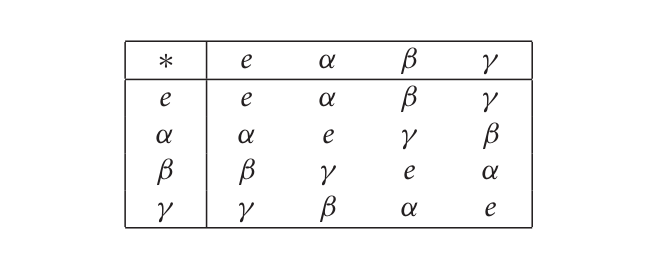
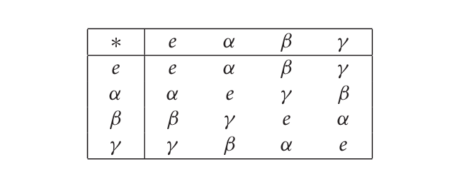
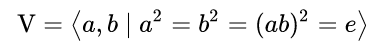
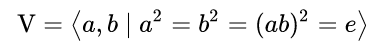

Resources:
- Øystein Linnebo. Philosophy of Mathematics, Princeton University Press, 2017
- Aristotle. Prior Analytics, circa 350 BCE, translated by Gisela Striker, Oxford: Clarendon Press 2009
- An older and mainstream translation: Robin Smith, Indianapolis: Hackett, 1989.
Note that Linnebo advocates a sort of Fregean Platonism.
Linnebo insists that these questions have scientific answers:
"Just as science can be used to study navigation in birds and primates’ knowledge of their environment, it can also be used to investigate human knowledge of mathematics"
And
He holds that the mild circularity does not trivialize the question.
"Just as science can be used to study navigation in birds and primates’ knowledge of their environment, it can also be used to investigate human knowledge of mathematics"
And
He holds that the mild circularity does not trivialize the question.
According to Kant, all synthetic a priori mathematical knowledge is necessary but not directly so; we need a "necessarily present intuition" which supplies the synthetic part of the judgement or statement.
To establish that the shortest line between two points is straight we need to bring in intuition to draw—perhaps in "pure imagination"— the shortest line between two points. We can then perceive that this line is straight.


Symmetries of a rectangle which is not a square

Bloch sphere symmetries

Multiplicaiton table


Presentation


Structures and their realizations
"These examples show how completely different systems of objects and relations can instantiate one and the same abstract mathematical structure. This abstract structure has been shown to have two different realizations."
Adopting the viewpoint of structuralism, we should have a language to talk about structures pure and simple.
Category Theory as Mathematics of Mathematics
Category theory is a language of mathematical structures par excellence.
It treats structures as autonomous forms without relying on any specified substance, rejecting the idea that mathematical objects are elements of structured sets.
Category theory is a language of mathematical structures par excellence.
It treats structures as autonomous forms without relying on any specified substance, rejecting the idea that mathematical objects are elements of structured sets.
Category Theory as Mathematics of Mathematics
From the viewpoint of category theory a structure is determined externally, as it were, by its network of mappings to and from other objects of the same kind, rather than internally, in terms of relations and operations on elements.
From the viewpoint of category theory a structure is determined externally, as it were, by its network of mappings to and from other objects of the same kind, rather than internally, in terms of relations and operations on elements.
Category Theory as Mathematics of Mathematics
Category theory is antithetical to the received idea that the meaning of a concept is anchored by reference to a unique absolute universe of sets. Rather it suggests meaning of mathematical concepts depends upon the choice of category of discourse and the meaning varies according to that choice.
Category theory is antithetical to the received idea that the meaning of a concept is anchored by reference to a unique absolute universe of sets. Rather it suggests meaning of mathematical concepts depends upon the choice of category of discourse and the meaning varies according to that choice.
Category Theory as Mathematics of Mathematics
Categorical formalizations have more congenial approach to modularity than set-theoretic ones. The idea here is that categories (such as category of monoids, category of groups, category of spaces, etc) are constructed in a certain way to do mathematics in them for a certain purpose. This approach has the advantage that once a result is proved in a category with less structure then one can transport it to categories with more structures by suitablefunctors .
Categorical formalizations have more congenial approach to modularity than set-theoretic ones. The idea here is that categories (such as category of monoids, category of groups, category of spaces, etc) are constructed in a certain way to do mathematics in them for a certain purpose. This approach has the advantage that once a result is proved in a category with less structure then one can transport it to categories with more structures by suitable
Category Theory as Mathematics of Mathematics
It even subsumes logic: various fragments of logic correspond to the internal logic of categories.
It even subsumes logic: various fragments of logic correspond to the internal logic of categories.
The Trouble with Conciousness Idea
Mathematicians, like all people, think with their brains, and it’s hard to understand how the brain, a physical entity, could interact with a non-physical reality.
Within the Platonist framework,
we cannot envisage any kind of neural process that could even correspond to the "perception" of a mathematical object.
The Infinite Monster Rearing Its Ugly Head
Already with the Newton’s and Leibniz’s invention of calculus and the use of infinitesimal, actual infinities are reintroduced into mathematics. Aristotlean view no longer secures a philosophical certainty about mathematics.
Cantor Bursting Onto The Scene
It was in the late 19th century that Georg Cantor, a Russian-born German mathematician, supplied the theory needed.
Cantor did not set out to explore infinity for its own sake; rather, he claimed, the task ‘was logically forced upon me, almost against my will’.
What he ended up with, after two decades of intellectual struggle, was a succession of higher and higher infinities – an infinite hierarchy of them, ascending towards an unknowable terminus that he called the Absolute.
The Pursuit of Absolute
According to Dauben, the pursuit of "Absolute" seemed to him a divinely vouchsafed vision; in transmitting it to the world, he regarded himself as ‘God’s ambassador’.
Cantor spent the rest of his life pondering the theological implications of infinity. He ended his life in an asylum.
Cantor's Reception in Europe
The Reception of Cantor's new theory was particularly terrible in France. Henri Poincaré (who rivalled Hilbert as the greatest mathematician of the era) observed that higher infinities ‘have a whiff of form without matter, which is repugnant to the French spirit’.
Russian mathematicians, by contrast, embraced the newly revealed hierarchy of infinities.
In Germany the Reception was divided: His one-time teacher Leopold Kronecker reviled it as ‘humbug’ and ‘mathematical insanity’, whereas David Hilbert declared: ‘No one shall expel us from the paradise that Cantor has created for us.’
French Rationalism vs Russinan Mysticism
Why the contrary reactions? Loren Graham and Jean-Michel Kantor see it as a matter of
Name Worshippers
The founding figures of the most influential school of 20th-century Russian mathematics were members of a heretical religious sect called the Name Worshippers, who believed that by repetitiously chanting God’s name they could achieve fusion with the divine.
Name Worshipping, traceable to fourth-century Christian hermits in the deserts of Palestine, was revived in the modern era by a Russian monk called Ilarion. In 1907, Ilarion published On the Mountains of the Caucasus, a book that described the ecstatic experiences he induced in himself while chanting the names of Christ and God over and over again until his breathing and heartbeat were in tune with the words.